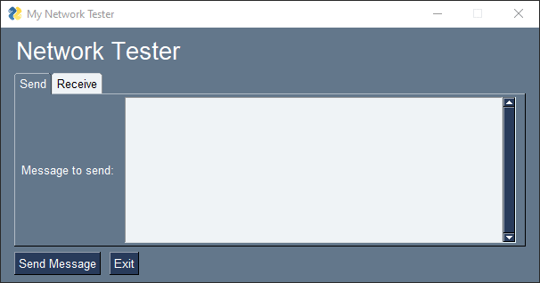
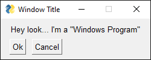
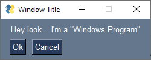
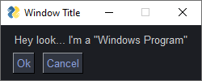
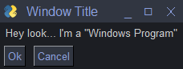
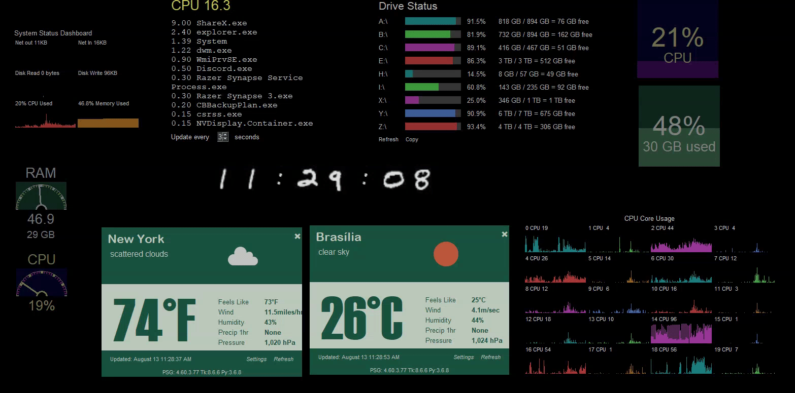

What Can PySimpleGUI Be Used For?
NOT Limited to SIMPLE Problems
Let's address this sweeping generalization often made about PySimpleGUI. "PySimpleGUI is only good for simple things". That's true, if all you've tried to make are simple things, and you've not investigated what others have made.
The SIMPLE in PySimpleGUI describes the ease of use and the syntax, not a description of the problem space.
It's an easy statement, and perhaps an easy assumption to make if time isn't taken to explore the library and ecosystem. The only problem is that it's not a true statement.
Don't believe everything you read on the Internet

See For Yourself
It's the simple syntax coupled with a rich and complete set of GUI Elements that are accessible to programmers of all levels that make "simple" so "powerful".
Let's look at this running example. Understand that you've not yet learned the PySimpleGUI syntax so the details are going to be fuzzy. Concentrate on the amount of code required versus the functionality obtained. 15 lines of code for a fully functioning window.
This little GUI is a network test GUI. The idea is to type a message into the interface, click the "Send Message" button, and the message will loop back over the network and be displayed as a message received. The "network part" is simulated so we can concentrate on the GUI only. The message you "send" is immediately displayed as if it was received.
Let's use a Tabbed interface. Tabs are typically one of the more advanced "widgets" in GUI frameworks. As you'll see, in PySimpleGUI Tabs are not difficult to use. They're in a layout like any other Element.
If you're evaluating several GUI frameworks, make a similar window in the other frameworks as a quick test.

From Simple Emerges Sophisticated
Because controlling the look of individual elements is simple (to the point of being trivial), it's possible to easily, with little effort, a tiny amount of code, create a highly customized look and feel.
This is another concept that requires thinking beyond the first glance. If creation of elements is trivial and control over their look is trivial, then that implies that a great deal of customization can be done with practically no effort.
A button's look is a great example of this.
PySimpleGUI is Great For "Anything Graphical", Plus More
Over-generalization - PySimpleGUI helps you put pixels on the screen.
It's a handy library for helping with programs that are not highly "Graphical" in nature. As you'll learn, PySimpleGUI simplifies Graphical User Interfaces, and it simplifies technologies that accompany GUI programming such as
- Threads
- JSON & INI Config files
- Subprocess execution
- System Tray programs
- Programming utilities
Adjunct APIs
When you're writing GUI programs, it's not uncommon, in more complex (i.e. not simple) applications, to need to use other Python modules like threading, subprocesses, and files to handle user settings. Because PySimpleGUI was designed for use by less experienced programmers, it includes a simplified access to these APIs as well.
Programming Utilities
Some of the PySimpleGUI project's tools like the Demo Browser, psgcompiler, etc, are standalone programs that can be used for non-PySimpleGUI projects. For example, the Demo Browser can be used to search any folder tree of files and then run the files found. You can use the psgcompiler program to turn any Python program into an EXE file as it's a front-end for pyinstaller.
There are numerous utilities described in this section further into this document.
Extension Capabilities Are Built-in
PySimpleGUI doesn't box you in. You are given access to the underlying GUI Framework directly from your code. If a feature is not yet implemented to do something you need done, you are not trapped. The ability to extend PySimpleGUI beyond the current features is built into the architecture.
Seeing is Believing
Let's have a look-see at a few examples of uses of PySimpleGUI.
The Obvious One... "Typical" Graphical User Interfaces
You know this one... a Windows, Mac or Linux "GUI Program" that has the familiar Buttons, Checkboxes, Radio Buttons, etc. This section we're focusing less on the mundane and more on "sectors" of the problem space.
There's the obvious, easy GUI program. Let's start with a "default" look you would get from tkinter:

If you want to add colors, change fonts, etc, for your application, these are usually lengthy operations and require a lot of repeated & tedious code.
By default, PySimpleGUI automatically adds a "Color Theme". In this example, the default PySimpleGUI color theme:

Maybe you're a "Dark Theme" kind of person. By adding 1 line of code:
you can change the look of all Elements in your windows, from a list of 154 PySimpleGUI supplied color themes or you can define your own custom theme.
If your dark theme is really a favorite of yours, then you can save it in the PySimpleGUI system settings so that your favorite color theme will be used as the default for all PySimpleGUI created windows. This will apply not only to programs you write, but it will be the default for PySimpleGUI programs that you run that other people write.

But, wait, it gets better! by adding one parameter (use_custom_titlebar=True) when making your window, you can replace the default operating-system-supplied titlebar with one that matches your theme:

Replacing the titlebar is a really difficult operation in Python GUI programming! Honest! PySimpleGUI makes it simple, trivial, for a number of normally difficult or impossible operations.
This is a summary of the currently available PySimpleGUI themes

Games
While not specifically written as a game development SDK, PySimpleGUI makes the development of some games quite easy.
This Chess program not only plays chess, but it integrates with the Stockfish chess-playing AI.

Several variants of Minesweeper have been released by users.


Card games work well with PySimpleGUI as manipulating images is simple when using the PySimpleGUI Graph element.

Maybe you want to make a game that uses a physics engine provided in a package like "pymunk" to make a program that both draws balls on the screen and enables you to click through your window as if it's not there, an easy to use PySimpleGUI feature.

"Rainmeter" Style Desktop Widgets
Rainmeter is one of the popular programs that's used to create Desktop Widgets. These are programs that you keep running on your desktop and are not shown on your taskbar.
Think of them as programs that run in the background and visually help you. They may or may not be interactive. A clock for example tells you the time, but likely isn't very interactive. A "Program Launcher", similar to Apple's Launchpad, enables a program to be launched by single-clicking on an icon or a button, etc. The current weather is a popular one.
If you're into monitoring the details of how your computer is operating, then much joy awaits you as there are numerous small PySimpleGUI programs to show information such as the current CPU usage, or the current usage per core.

Video Capture & Playback... and How About Some AI As Well?
The Demo Programs, a part of the PySimpleGUI Ecosystem, provide you with numerous examples of how to integrate with OpenCV, a Python video input/output and processing library. You can combine this video capability with Artificial Intelligence algorithms to perform object identification tasks as shown in this YOLO algorithm example.

Or maybe you're into image colorizer technologies.

Graphs Are SO Simple to Draw in PySimpleGUI
Whether it's a Matplotlib graph or one drawn using PySimpleGUI's Graph API calls, you will find PySimpleGUI has taken the pain out of drawing graphs. Want (0,0) to be the center of your graphing area? No problem. Remember that you and your experience are the focus of the PySimpleGUI library & Ecosystem. The goal is to take away the annoying, time-consuming, and pain parts of programming and leave you with the fun parts.
A grid of graphs that your program updates once a second is not a difficult program to write, even for a complete beginner.

If you're a Matplotlib user, there area lot of examples ready to use as a starting point for you.

Anyone Have Room Left for Some Pie? Err... Pi?
Writing a program to run on a Raspberry Pi makes both displaying information simple and getting touchscreen or other inputs from devices easy to integrate into your code. If your specialty is hardware and have struggled to write software to control your hardware, PySimpleGUI may be the solution you've been waiting for.

Every Day, More Examples
To see a much more diverse set of examples, take a look at the screenshots that users have submitted. You'll find them on the User Screenshots Tab in the documentation.